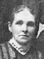

John Henry and Fannie Jane Roundy Willis Family
Home
Histories
Charts
Photos
Maps
Restricted
News
Info
Contact
| <--(return)-- |   | Shadrach Roundy and Betsy Quimby | ----> |   ----> ----> | Lorenzo Wesley and Priscilla Parrish  |

|
John Henry Willis and Fannie Jane Roundy  |
| Bertha Jane Willis 17 Apr. 1880 - July 1972 Married Charles Harrison Frost 28 Jan 1899 The 1st child of John Henry Willis and Fannie Jane Roundy |
| 12 | John Lorenzo Willis 27 Feb. 1882 - 31 May 1954 Married Sarah Woolford 19 Oct. 1904 Married Sarah Mills 2 Oct. 1912 The 2nd child of John Henry Willis and Fannie Jane Roundy |
| * | Walter Marian Willis 2 Mar. 1884 - 12 Nov. 1890 The 3rd child of John Henry Willis and Fannie Jane Roundy |
| Hugh Willis 14 Feb. 1886 - 10 Nov. 1960 Married Laura Lovina Brewer 3 Oct. 1912 The 4th child of John Henry Willis and Fannie Jane Roundy |
| Belva Willis 17 Aug. 1888 - 17 Sep. 1982 Married Charles Ballard 20 Sep. 1912 The 5th child of John Henry Willis and Fannie Jane Roundy |
| Frances Willis 8 Jan. 1891 - 29 Dec. 1915 The 6th child of John Henry Willis and Fannie Jane Roundy |
| Priscilla Willis 31 Mar. 1893 - 12 July 1977 Married Reese Perry Wasson 12 Aug. 1918 The 7th child of John Henry Willis and Fannie Jane Roundy |
| Merrill Roundy Willis 2 Apr. 1896 - 25 Sep. 1981 The 8th child of John Henry Willis and Fannie Jane Roundy |
| Cleon Ewart Willis 6 July 1898 - 17 Sep. 1925 The 9th child of John Henry Willis and Fannie Jane Roundy |
| Verlie Willis 28 Dec. 1900 - Married Luther Thomas 16 May 1922 The 10th child of John Henry Willis and Fannie Jane Roundy |
| Myron Shadrach Willis 26 Dec. 1905 - 28 Apr. 1991 Married Phoebe Webb 6 Nov. 1923 The 11th child of John Henry Willis and Fannie Jane Roundy |
Back to Buchanan Family History web pages.